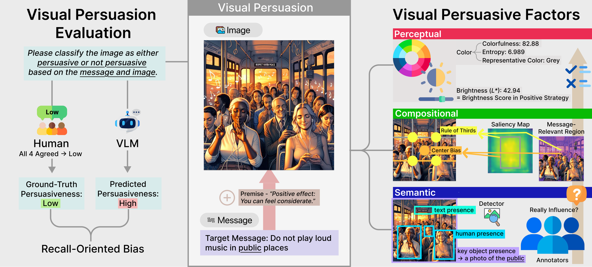
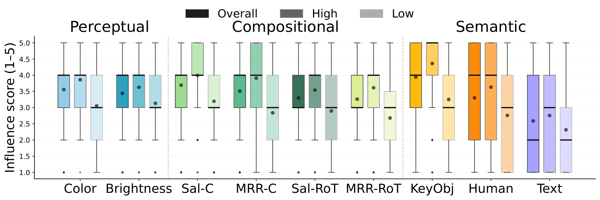
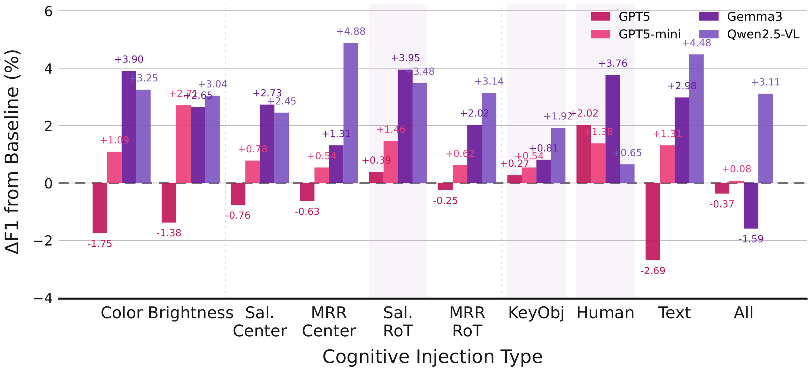
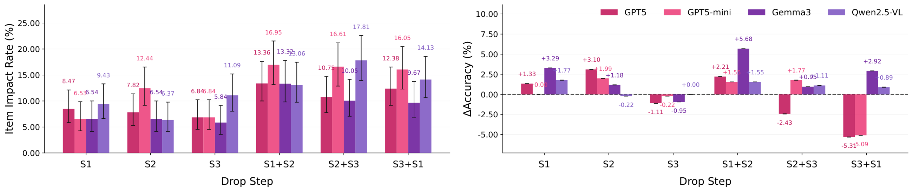

How it looks
Immediate visual impressions and their alignment with the persuasion strategy.
- Colorfulness & color entropy
- Representative color congruence
- Brightness & strategy alignment
Findings of EMNLP 2026
1Graduate School of Artificial Intelligence, POSTECH
2Department of Computer Science and Engineering, POSTECH
PROJECT SUMMARY
Can a vision-language model tell whether an image persuasively supports a message? We study 562 image–message pairs with high human agreement and find that VLMs frequently mistake persuasion-relevant visual cues for sufficient evidence of persuasiveness.
We introduce Visual Persuasive Factors (VPFs) to diagnose this gap across three levels: perceptual, compositional, and semantic. Contextual framing of these cues can improve judgments, but connecting visual evidence to communicative intent remains a central bottleneck.
An image can contain relevant objects, people, and text without effectively supporting its intended message. Our framework compares human and model judgments, then examines the visual factors behind their differences.

THE DIAGNOSTIC FRAMEWORK
Immediate visual impressions and their alignment with the persuasion strategy.
The placement of visual attention and message-relevant regions.
Content cues that may contribute to the intended persuasive appeal.
A separate survey with 141 annotators finds higher perceived factor importance for high-persuasiveness items across all nine factors. VPFs provide an interpretable diagnostic lens; they are not an exhaustive model of visual persuasion.

FINDING 01
Across model families, VLMs tend to label too many images as persuasive. High recall comes with low precision, exposing a recall-oriented bias.
| Model | Accuracy | Precision | Recall | F1 |
|---|---|---|---|---|
| GPT-5 | 69.57 | 51.01 | 98.88 | 67.30 |
| GPT-5-mini | 60.14 | 44.13 | 97.19 | 60.70 |
| Gemma3 | 63.88 | 46.33 | 88.76 | 60.89 |
| Qwen2.5-VL | 54.98 | 40.51 | 89.89 | 55.85 |
VPFs distinguish human high and low judgments, but models reproduce these patterns only partially. Among human-labeled low items, key objects, people, and text can become generic positive signals, causing models to overgeneralize from cue presence to persuasiveness.
A relevant object is a candidate piece of evidence. Whether it supports the message still needs to be evaluated.
| Group | Row | Perceptual (%) | Compositional (%) | Semantic (OR) | ||||||||||
| Color | Brightness | CBI | T3 | KeyObj | Human | Text | ||||||||
| Colorfulness | Entropy | Rep. Congruence | Raw | Pos | Neg | Saliency | MRR | Saliency | MRR | |||||
| Panel A: Ground Truth | ||||||||||||||
| Human | Δ_f(Y) | -3.94**s | 4.57***s | 15.09***s | -0.34n | -5.11s | 5.91**s | 2.65**s | -2.83n | 3.19***s | 3.31**s | 3.36***m | 1.25n | 0.60*s |
| Panel B: VLM Predictions | ||||||||||||||
| GPT-5 | Δ_f(Y) | -1.66n | 4.82***s | 12.34***s | -1.69n | -5.74*s | 4.19*s | 3.27***s | 2.45n | 2.58***s | 1.23n | 2.87***m | 1.56*s | 0.94n |
| GPT-5-mini | Δ_f(Y) | -3.51*s | -3.68**s | 16.19***s | -1.84n | -6.92*s | 6.67**s | 2.90***s | 1.46n | 2.65***s | 0.67n | 2.68***m | 1.58*s | 1.35n |
| Gemma3 | Δ_f(Y) | -2.87n | 3.08**s | 15.04***s | -0.67n | -6.30*s | 7.99***m | 7.01***m | 4.73*s | 4.97***m | 2.78*s | 2.03***s | 1.88**s | 1.37n |
| Qwen2.5-VL | Δ_f(Y) | -2.51n | 4.99***s | 14.41**s | 0.86n | -5.35s | 8.78***m | 6.15***m | 1.60n | 5.49***l | 4.73***s | 2.73***m | 2.48***m | 1.47s |
| Panel C: VLM False Positives among Ground-Truth Low Items | ||||||||||||||
| GPT-5 | Δ_f(FP-TN) | 0.31n | 3.28*s | 4.60n | -2.83n | -6.10s | 0.51n | 0.42n | 0.26n | 1.31n | -0.66n | 2.18***s | 1.72*s | 1.19n |
| GPT-5-mini | Δ_f(FP-TN) | -2.05n | 2.29n | 7.80n | -2.53n | -5.99s | 3.81s | 1.06n | -0.90n | 1.78*s | 1.28n | 2.02**s | 1.53s | 1.79*s |
| Gemma3 | Δ_f(FP-TN) | -0.93n | 2.90s | 6.00n | -1.90n | -6.69*s | 5.99*s | 2.23*s | 1.64n | 2.47**s | 0.85n | 1.41n | 1.96**s | 1.63*s |
| Qwen2.5-VL | Δ_f(FP-TN) | -1.73n | 4.20**s | 14.60**s | 0.31n | -5.35s | 8.08**s | 3.60**s | 0.49n | 3.42***m | -0.21n | 1.99**s | 2.17***s | 1.56n |
Human–VLM comparison summary across VPFs. Panel A shows that VPFs separate human-labeled High and Low items, while Panel B shows that VLM predictions partially reproduce this human-aligned pattern. Panel C further analyzes VLM false positives among ground-truth Low items, revealing that models often associate persuasion-relevant cues with erroneous High predictions. Overall, VLMs appear sensitive to several persuasive cues, but their false positives suggest an overgeneralization from persuasive cues to High persuasiveness.
| VLM Source | Input Features | Acc. (%) | AUC (%) | ΔAUC (pp) |
| – | VPFs | 69.5 | 71.8 | – |
| GPT-5 | VLM pred. | 72.0 | 78.8 | – |
| GPT-5 | VLM pred. + VPFs | 75.9 | 85.1 | +6.3 |
| GPT-5-mini | VLM pred. | 66.7 | 70.5 | – |
| GPT-5-mini | VLM pred. + VPFs | 71.3 | 79.6 | +9.1 |
| Gemma3 | VLM pred. | 66.4 | 71.0 | – |
| Gemma3 | VLM pred. + VPFs | 73.1 | 79.9 | +8.9 |
| Qwen2.5-VL | VLM pred. | 66.7 | 64.5 | – |
| Qwen2.5-VL | VLM pred. + VPFs | 70.2 | 75.4 | +10.9 |
VPF-aware prediction of human ground-truth labels. VPFs carry predictive signal and provide additive gains beyond VLM predictions in logistic regression.
FINDING 02
Factor-aware Cognitive Injection frames VPFs as context-dependent auxiliary cues and generally reduces false positives while improving F1. Simply supplying aligned key objects, however, lowers F1 across the evaluated models. General chain-of-thought and structured reasoning scaffolds show mixed effects.

| Non-Aware Key Object | ||||||||||||
| Model | Baseline | Chain-of-Thoughts | Knowledge-Conditioned Chain | |||||||||
| Acc. | Prec. | Rec. | F1 | Acc. | Prec. (Δ) | Rec. (Δ) | F1 (Δ) | Acc. | Prec. (Δ) | Rec. (Δ) | F1 (Δ) | |
| GPT-5 | 69.57 | 51.01 | 98.88 | 67.30 | 70.11 | 51.52 ↑0.51 | 94.94 ↓3.94 | 66.80 ↓0.50 | 65.48 | 47.81 ↓3.20 | 98.31 ↓0.57 | 64.34 ↓2.96 |
| GPT-5-mini | 60.14 | 44.13 | 97.19 | 60.70 | 63.88 | 46.63 ↑2.50 | 97.19 (0.00) | 63.02 ↑2.32 | 63.35 | 46.30 ↑2.17 | 98.31 ↑1.12 | 62.95 ↑2.25 |
| Gemma3 | 63.88 | 46.33 | 88.76 | 60.89 | 51.25 | 38.84 ↓7.49 | 93.82 ↑5.06 | 54.93 ↓5.96 | 39.15 | 33.98 ↓12.35 | 97.75 ↑8.99 | 50.43 ↓10.46 |
| Qwen2.5-VL | 54.98 | 40.51 | 89.89 | 55.85 | 68.09 | 49.82 ↑9.31 | 76.40 ↓13.49 | 60.31 ↑4.46 | 57.65 | 42.46 ↑1.95 | 94.94 ↑5.05 | 58.68 ↑2.83 |
| Aware Key Object | ||||||||||||
| Model | Aligned Key Object Context | Key Object-Aware CoT | Rationale Injection | |||||||||
| Acc. | Prec. (Δ) | Rec. (Δ) | F1 (Δ) | Acc. | Prec. (Δ) | Rec. (Δ) | F1 (Δ) | Acc. | Prec. (Δ) | Rec. (Δ) | F1 (Δ) | |
| GPT-5 | 69.93 | 51.44 ↑0.43 | 90.45 ↓8.43 | 65.58 ↓1.72 | 63.70 | 46.41 ↓4.60 | 94.38 ↓4.50 | 62.22 ↓5.08 | 69.40 | 50.89 ↓0.12 | 96.07 ↓2.81 | 66.54 ↓0.86 |
| GPT-5-mini | 58.72 | 43.11 ↓1.02 | 94.94 ↓2.25 | 59.30 ↓1.40 | 54.98 | 41.18 ↓2.95 | 98.31 ↑1.12 | 58.04 ↓2.66 | 64.06 | 46.79 ↑2.66 | 98.31 ↑1.12 | 63.41 ↑2.71 |
| Gemma3 | 62.28 | 45.06 ↓1.27 | 87.08 ↓1.68 | 59.39 ↓1.50 | 46.44 | 36.89 ↓9.44 | 97.19 ↑8.43 | 53.48 ↓7.41 | 59.79 | 43.65 ↓2.68 | 92.70 ↑3.94 | 59.35 ↓1.54 |
| Qwen2.5-VL | 53.02 | 39.56 ↓0.95 | 91.57 ↑1.68 | 55.25 ↓0.60 | 62.46 | 45.22 ↑4.71 | 87.64 ↓2.25 | 59.66 ↑3.81 | 53.91 | 39.37 ↓1.14 | 84.27 ↓5.62 | 53.67 ↓2.18 |
Results of semantic grounding and reasoning scaffolds on VLM performance. Δ next to Precision, Recall, and F1 shows the absolute percentage-point change relative to the model's own baseline scores (↑/↓ for direction).
| Injection Type | ΔFP Rate | ΔPrec. | ΔRec. | ΔF1 | No. of Models with F1 Gain |
| Panel A. Factor-wise Cognitive Injection | |||||
| Color | ↓5.60 | ↑1.98 | ↓2.81 | ↑1.06 | 3/4 |
| Brightness | ↓5.01 | ↑2.15 | ↓0.70 | ↑1.76 | 3/4 |
| Saliency-Center | ↓5.66 | ↑2.10 | ↓2.39 | ↑1.30 | 3/4 |
| MRR-Center | ↓5.34 | ↑2.12 | ↓1.54 | ↑1.53 | 3/4 |
| Saliency-RoT | ↓7.68 | ↑3.25 | ↓2.25 | ↑2.32 | 4/4 |
| MRR-RoT | ↓5.08 | ↑1.94 | ↓1.54 | ↑1.38 | 3/4 |
| KeyObj | ↓3.91 | ↑1.46 | ↓1.69 | ↑0.88 | 4/4 |
| Human | ↓9.38 | ↑3.61 | ↓4.35 | ↑1.95 | 4/4 |
| Text | ↓5.27 | ↑2.13 | ↓1.40 | ↑1.52 | 3/4 |
| Panel B. All-factor Cognitive Injection | |||||
| All | ↓1.03 | ↑0.42 | ↓0.28 | ↑0.31 | 2/4 |
Average false-positive mitigation and performance effects of cognitive injection across four VLMs relative to each model's baseline in Tab. [paper]. All Δ values are computed as injection - baseline.
FINDING 03
We decompose model-generated rationales into three functional steps and selectively remove them to examine how each part affects the final prediction.
Identify the relevant visual object.
Explain how it supports or undermines the message.
Connect the evidence to the persuasive judgment.

The diagnosis points to a weakness in connecting object identification and semantic message alignment to the final persuasive claim. Identifying visual evidence and describing its relevance do not guarantee that the model integrates it appropriately.
@misc{park2025visionlanguagemodelsunderstandvisual,
title={Do Vision-Language Models Understand Visual
Persuasiveness? A Diagnosis via Visual Persuasive Factors},
author={Gyuwon Park and Hyounghun Kim},
year={2025},
eprint={2511.17036},
archivePrefix={arXiv},
primaryClass={cs.CL},
url={https://arxiv.org/abs/2511.17036}
}